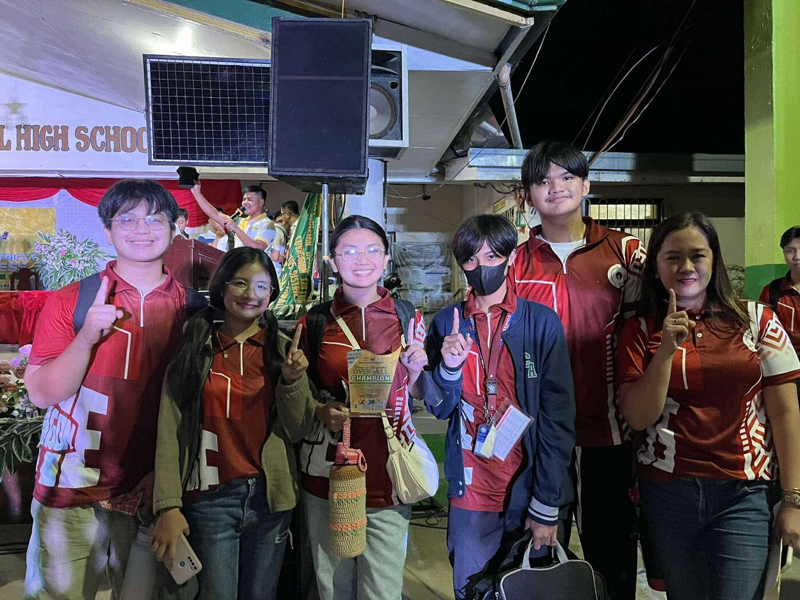
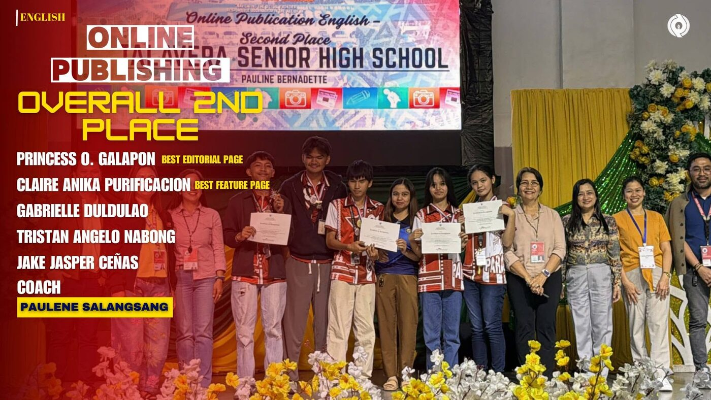

1st—CD1SPC
Congressional District 1 School Press Conference
Our team was named overall champion. As layout artist, I designed and arranged the pages of our publication.

1st—CD1SPC
Our team was named overall champion. As layout artist, I designed and arranged the pages of our publication.

2nd—DSPC
Overall 2nd place in Online Publishing (English). I handled the layout, giving our online publication its look.
With High Honors
Graduated from the STEM strand, section 12 – Aurum, with High Honors.